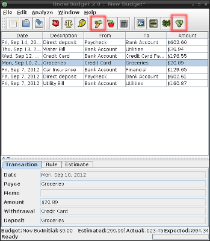

|  |
Once estimates and assignment rules have been defined, UnderBudget can begin analyzing your progress against your budget. To do this, it must be given, in some way, your actual financial records, or transactions. Transactions can be imported from external ledger applications or even banking websites. |